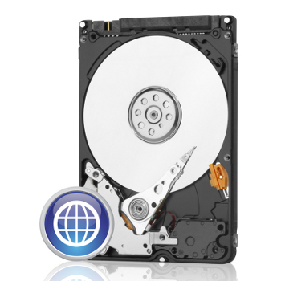

Disque dur interne 2.5 pouces Western Digital WD Blue 2,5" - S-ATA III - 320 Go - 7mm
Prix: 59,99 € TTC
Format 2,5"
Capacité 320 Go
Interface SATA 3 (6 Gb/s)
Vitesse de rotation 5400 trs/min
Mémoire cache 8 Mo
Temps d'accès moyen 5,5 ms
Capacité 320 Go
Interface SATA 3 (6 Gb/s)
Vitesse de rotation 5400 trs/min
Mémoire cache 8 Mo
Temps d'accès moyen 5,5 ms
Un disque dur performant, silencieux et fiable
Infos Paiements:


Infos Livraisons:
Conditions Génerales